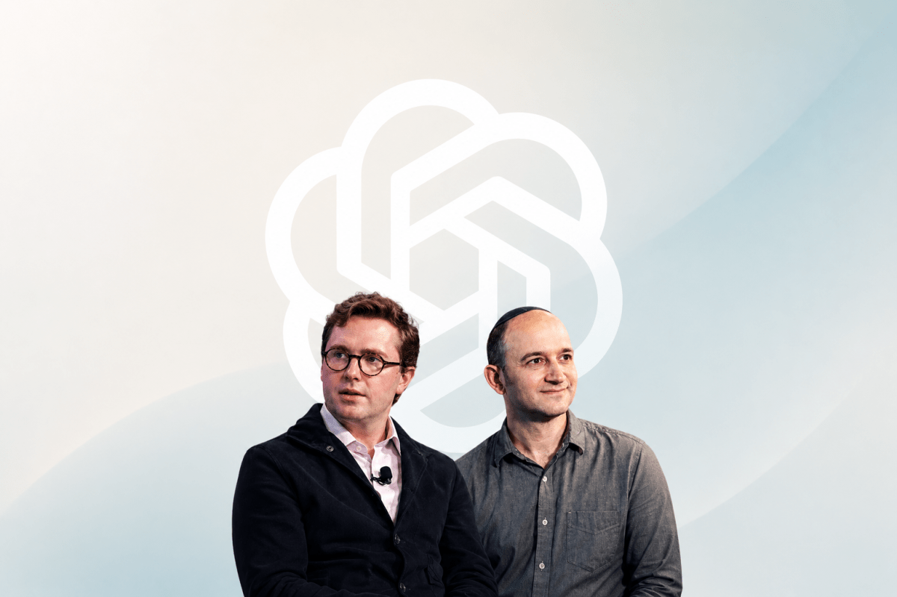
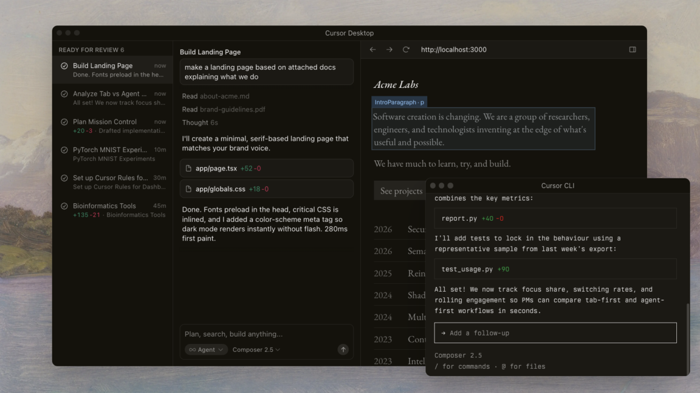
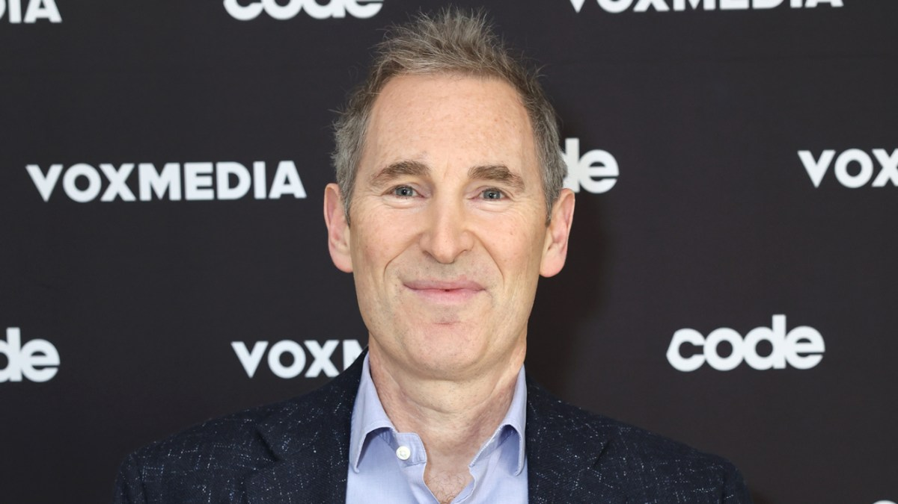
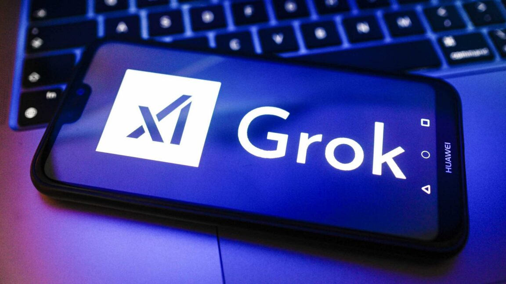

Daily AI Digest — 2026-06-20
OpenAI Hires Transformer Co-Author Noam Shazeer Ahead of IPO

Industry | June 18, 2026 | TechCrunch
OpenAI has hired Noam Shazeer, one of the most foundational minds in modern generative AI, away from Google DeepMind. Shazeer co-authored the seminal 2017 paper "Attention Is All You Need" which introduced the Transformer architecture — the foundation of every major AI model today.
Shazeer had been at Google since 2000 (minus a three-year stint co-founding Character AI, which Google reacquired in a $2.7 billion deal). He's also credited with early work on large language models during his first tenure at Google Brain.
OpenAI also brought on Dean Ball, former White House AI policy official who helped publish America's AI Action Plan, to lead a new "Strategic Futures" team focused on frontier AI policy — a clear signal that OpenAI is preparing for regulatory scrutiny ahead of its expected IPO.
Key Takeaways:
- Noam Shazeer co-authored "Attention Is All You Need" (the Transformer paper)
- Left Google DeepMind where he was a Gemini co-lead
- Also hiring Dean Ball (ex-White House AI policy) for "Strategies Futures" team
- Hiring spree signals serious IPO preparation
- OpenAI shoring up both technical firepower and policy credentials simultaneously
SpaceX Acquires AI Coding Platform Cursor for $60 Billion

Industry | June 19, 2026 | Ars Technica
SpaceX has announced a $60 billion all-stock acquisition of AI coding platform Cursor, just two days after SpaceX's unprecedented IPO and months after the SpaceX-xAI merger. The deal is expected to close in Q3 2026.
Cursor was one of the first tools to fully integrate large language models into an IDE — a branch of Visual Studio Code with heavy AI integration. However, incumbent platforms and bigger AI companies have since rolled out comparable features, and Cursor was struggling to break even against Anthropic's Claude Code dominance.
This is a marriage of two companies that have arguably been falling behind in the AI race. xAI's Grok chatbot has been riddled with controversies and lacks a competitive coding model. Cursor needed compute — earlier this year, xAI struck a deal to give Cursor access to its compute infrastructure, foreshadowing this acquisition.
Key Takeaways:
- $60B all-stock deal, closes Q3 2026
- Cursor was losing market share to Claude Code, struggling to break even
- xAI gets a competitive coding tool; Cursor gets compute and distribution
- Both companies were falling behind Anthropic, OpenAI, and Google
- Follows SpaceX's IPO and SpaceX-xAI merger
Amazon Plans to Sell Trainium AI Chips, Challenging Nvidia Directly

Industry | June 18, 2026 | TechCrunch
Amazon Web Services is in talks to sell its homegrown Trainium AI chips to third-party companies for use in their own data centers — a move that would directly challenge Nvidia's dominance in the AI hardware market. AWS AI chief Peter DeSantis confirmed the plans to Bloomberg.
The push comes from CEO Andy Jassy's April shareholder letter: "If our chips business was a standalone business, and sold chips produced this year to AWS and other third parties, our annual run rate would be ~$50 billion. There's so much demand for our chips that it's quite possible we'll sell racks of them to third parties in the future."
A $50 billion competitor wouldn't tank Nvidia's $326 billion revenue run rate, but it would be akin to adding another Intel-sized player overnight.
Key Takeaways:
- AWS Trainium chips could become available to third-party data centers
- Standalone chip business would be ~$50B annual run rate
- Biggest direct challenge to Nvidia's AI chip dominance so far
- Amazon benefits from both direct sales and cloud service revenue
- Signals the AI hardware market is ripe for competition beyond Nvidia
Leaked Financial Docs Show OpenAI Is Losing Billions Despite Revenue Surge
Industry | June 19, 2026 | Ars Technica
Newly leaked audited financial documents show OpenAI's revenue growing from $3.7 billion in 2024 to $13.07 billion in 2025 — but expenses are growing even faster. R&D alone was $19.18 billion in 2025 (including $10.59B paid to Microsoft). Cost of revenue hit $7.5B, and sales/marketing grew to $5.73B.
Total operating loss: $20.92 billion in 2025, up from $8.78 billion in 2024. Net loss ballooned to nearly $39 billion, though ~$30B of that was a one-time accounting charge from the for-profit conversion. Without it, net loss was ~$8B.
As OpenAI files SEC paperwork ahead of its expected IPO, it will need to rein in massive R&D costs and deal with enterprise customers balking at token-based pricing.
Key Takeaways:
- Revenue: $3.7B (2024) → $13.07B (2025), but R&D alone was $19.18B
- Operating loss: $20.92B in 2025 (up from $8.78B)
- Net loss ~$39B includes ~$30B one-time charge; underlying loss ~$8B
- Company targeting profitability by 2030
- Enterprise customers starting to demand measurable ROI for AI spending
Mukesh Ambani Brings AI to 500 Million Indians
Industry | June 19, 2026 | TechCrunch
Billionaire Mukesh Ambani is positioning Reliance Industries as India's national AI champion. At its annual shareholder meeting, Reliance announced three major products: Jio Call Agent (AI assistant that joins phone calls to transcribe, summarize, and perform tasks), an AI-powered MyJio app (handling eSIM activation and roaming plans via natural language), and TeleFrame (a home display using AI agents to surface weather, schedules, and reminders).
Jio Call Agent launches later this year for Jio's 500+ million users. By embedding AI directly into the telecom network, Reliance bets AI assistance becomes a native feature of phone calls.
"India should not be a mere consumer of AI created elsewhere. It must become a creator, adopter, and a global leader in AI," Ambani said.
Key Takeaways:
- Jio Call Agent joins and summarizes phone calls for 500M+ users
- MyJio app handles tasks via natural language
- TeleFrame is an AI home display for proactive information
- Embedded in telecom network, not a standalone app — massive distribution advantage
- Part of India's push for sovereign AI capabilities
From PGP to Mythos: Why Export Controls Don't Stop Anyone
Policy | June 19, 2026 | TechCrunch
The White House ordered Anthropic to restrict export of Fable 5 and Mythos 5, and Anthropic pulled both models within 90 minutes. But this isn't the first time governments have tried to control dangerous technology through export controls — and the track record is middling at best.
In the 1990s, the US tried to restrict encryption exports (remember PGP?). It didn't work — the technology spread anyway, just slower and through worse channels. The same pattern played out with spyware controls. The real question isn't whether the US can stop AI capabilities from spreading — it's whether slowing them down by a few months is worth the cost.
Anthropic itself has said these capabilities will be broadly available in 6-24 months regardless. The ban may actually hurt US competitiveness more than it helps security.
Key Takeaways:
- Anthropic pulled Fable 5 and Mythos 5 within 90 hours of the directive
- Export controls on encryption (PGP) and spyware failed to stop proliferation
- Anthropic says these capabilities will be broadly available in 6-24 months anyway
- Ban may hurt US competitiveness more than it helps security
- Sets precedent for government control over AI model distribution
Trump Administration Helps xAI Fight Pollution Lawsuit, Citing Military Need for Grok

Policy | June 18, 2026 | Ars Technica
The Trump administration is intervening on behalf of Elon Musk's xAI to block a Clean Air Act lawsuit filed by the NAACP. The lawsuit alleges xAI violated environmental law by operating up to 57 unpermitted gas turbines at its Colossus data center in Mississippi.
The DOJ argued the lawsuit "threatens artificial-intelligence innovation" and claimed Grok provides "critical support for the Department of War's military operations." A Pentagon official declared that Grok Gov Model helped deploy over 2,000 munitions to 2,000 targets within 96 hours during Operation Epic Fury in Iran.
The Southern Environmental Law Center responded that the US is arguing "xAI should be allowed to break the law solely because the Trump administration says so."
Key Takeaways:
- DOJ trying to dismiss NAACP Clean Air Act lawsuit against xAI
- Up to 57 unpermitted gas turbines at Mississippi data center
- Government claims Grok is critical for military operations
- Pentagon says Grok helped deploy 2,000 munitions in 96 hours
- Raises questions about whether AI companies get special legal treatment
Bernie Sanders Unveils $7 Trillion Plan to Give Americans Control of AI
Policy | June 18, 2026 | Ars Technica
Bernie Sanders has unveiled an aggressive plan to transfer trillions from leading AI firms to the public. The legislation would create a sovereign wealth fund "financed through a one-time 50 percent tax on the stock of the largest AI companies." Any AI firm doing $200M+ in annual AI sales would be subject.
Sanders estimated the fund could be worth $7 trillion, generating "hundreds of billions of dollars annually in direct payments to Americans." Each American would likely receive more than $1,000 annually. A bipartisan commission would oversee the fund and could block corporate decisions that harm the public.
"The benefits cannot simply go to the handful of wealthy corporations," Sanders said. "They will be shared by the American people."
Key Takeaways:
- 50% one-time tax on largest AI companies' stock to create $7T fund
- Every American would get $1,000+ annually in dividends
- Bipartisan commission could block harmful corporate decisions
- Any AI firm with $200M+ annual revenue subject to the tax
- Goes further than proposals from Altman or Amodei on public AI benefits
Why This Matters Today
The AI industry is entering a phase where the constraints are no longer just technical — they're infrastructural, geopolitical, and almost absurd.
Amazon's move to sell Trainium chips shows that even Nvidia's stranglehold on AI hardware has an expiration date. When the second-largest cloud provider starts selling its own silicon, the competitive landscape shifts permanently. Combined with OpenAI's leaked financials — $13B revenue but $20B+ in operating losses — it's clear the AI money is flowing, but the profitability question remains wide open.
Meanwhile, the physical realities of AI are catching up. The xAI pollution lawsuit — where the government argues that breaking environmental laws is acceptable because the military needs Grok — shows how "national security" is becoming a wildcard that could override any regulation. And the Anthropic export control saga is repeating the failed playbook of encryption controls from the 1990s.
India's push, led by Ambani, to embed AI into 500 million phone calls isn't just ambition — it's a statement that the next billion AI users won't be English-speaking Americans. The geopolitical map of AI is being redrawn.
And through it all, the talent wars intensify. Shazeer jumping from Google to OpenAI isn't just a hire — it's a signal that the IPO race has turned into an arms race for the people who literally wrote the book on Transformers.
The AI industry isn't slowing down. It's just running into walls faster.